Round 2 — Summer anchor + flat-pad attempt (current)
Why "summer anchor": PixelLab auto-frames every generation to fill the
canvas, so independently-made seasons aren't to-scale. We generate the largest-extent season
first (summer = full-grown) with deliberate headroom (~70–75%), then derive spring / autumn /
winter from it so they sit to-scale and never overflow. The full corn stalk + ear now fits with
room to spare. ✅
Flat-pad status: PixelLab
map-objects still extrude a thin isometric edge (a low slab), not a perfectly flat pad —
far flatter than round 1's tall cube, but not zero-depth. "low top-down" (a2/a4) flattens more
but gets messy & loses headroom. Open decision: accept the clean low slab (a1), or
switch to a decoupled pipeline — generate the subject alone (no pad) and composite it onto
a truly-flat pad we control (also gives perfect scale + identical pads across all tiles).
Style spec & candidate legend
SUMMER anchor — peak, abundance. Full-grown subject, deep saturated green, bright midday light from upper-left, lush grass at the pad edge. Subject fills ~70–75% of the tile with clear headroom. Flat-ish square soil pad. Selective outline, hue-shifted ramps.
| Variant | Camera | Outline | Shading | Detail |
|---|---|---|---|---|
| a1 | high top-down | selective | medium | high |
| a2 | low top-down | selective | medium | high |
| a3 | high top-down | selective | detailed | high |
| a4 | low top-down | selective | medium | medium |
🌳 Oak — summer anchor
tile_tree_oak · resource → plank★ Claude's pick
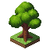
a1 · high · selective · medium
04965b05
Cleanest thin pad, good headroom, vivid palette; pad matches corn-a1.
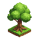
a2 · low · selective · medium
78a13833
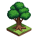
a3 · high · selective · detailed
d9efcf5c
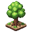
a4 · low · selective · medium
1b1ba5d3
a1 @64
a1 @48
a1 @32 (min)
🌽 Corn — summer anchor
tile_grain_corn · resource → flour / corn-cob bundle★ Claude's pick

a1 · high · selective · medium
2cd0641b
Full stalk + ear fits with headroom; clean thin pad twins oak-a1.
a2 · low · selective · medium
20c6a7b2

a3 · high · selective · detailed
87c68c74
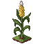
a4 · low · selective · medium
aea87614
📦 Round 1 — Spring iso-block candidates (rejected: pad too tall/cube-like)
🌳 Oak — spring (round 1)

c1 high·sel·med
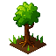
c2 low·sel·med
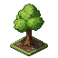
c3 high·single·detail
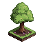
c4 low·single·med
🌽 Corn — spring (round 1)
c1 high·sel·med
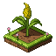
c2 low·sel·med
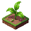
c3 high·single·detail
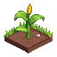
c4 low·single·med